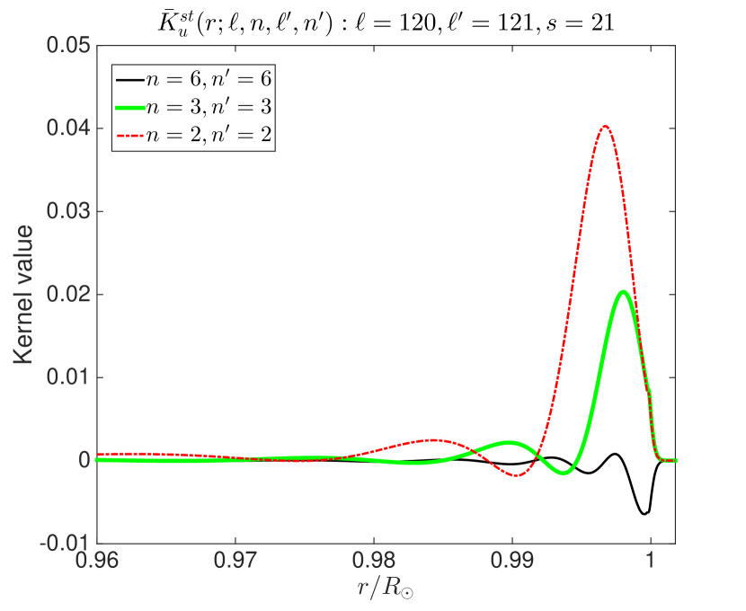
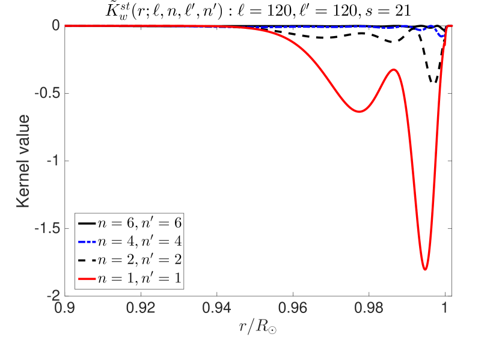
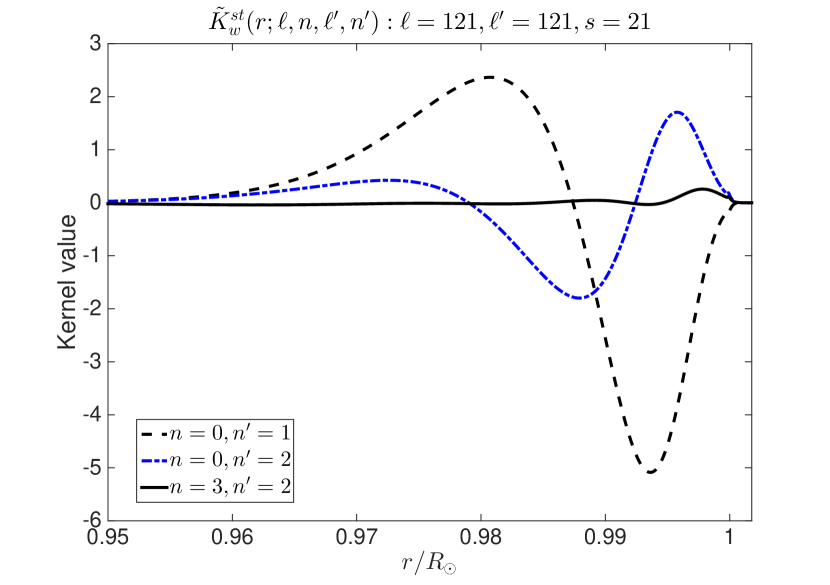
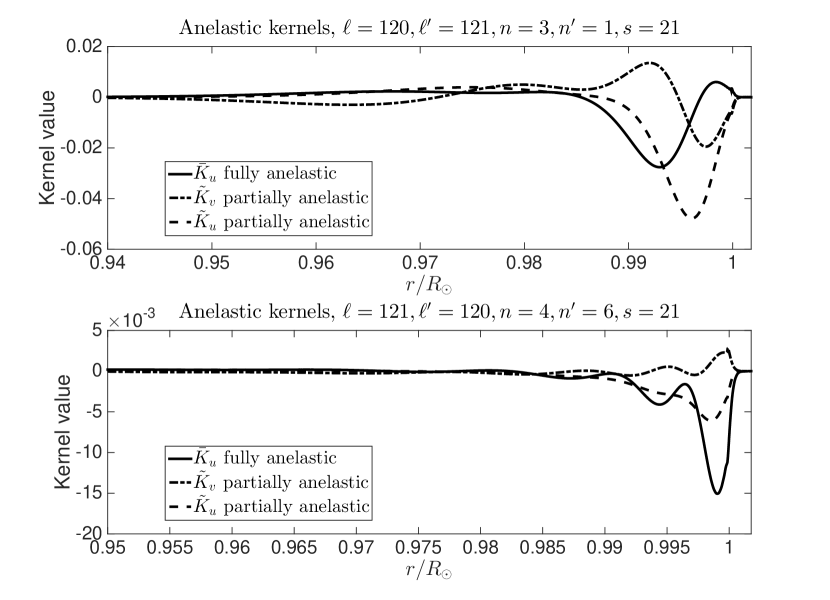
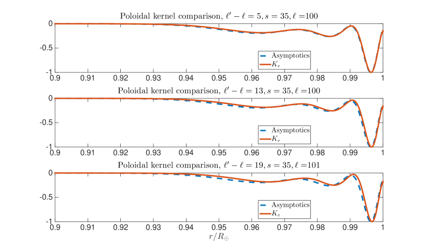
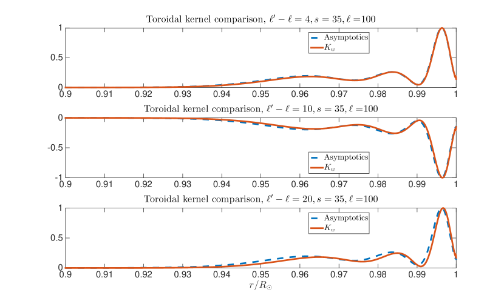
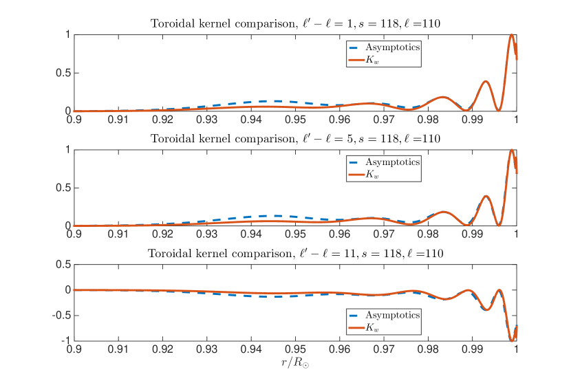
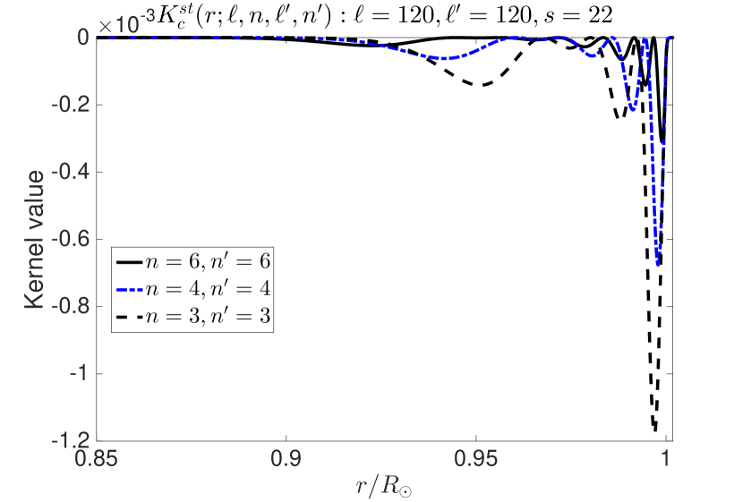

حساسية القياسات الشمسية الزلزالية لاقتران الأنماط العادية إزاء التدفقات واضطرابات سرعة الصوت
الملخص
نشتق في هذه المقالة ونحسب حساسية قياسات الاقتران بين أنماط التذبذب العادية في الشمس للتدفقات الكامنة. تستند النظرية إلى نظرية اضطراب بورن من الرتبة الأولى، ويُجرى التحليل باستعمال الصياغة التي وصفها Lavely & Ritzwoller (1992). وعلى الرغم من طول الاشتقاق، فإننا نفصّله ونحسب حساسية أزواج محددة من الأنماط العادية المقترنة للشذوذات في الداخل. وهذه الأنوية، في الواقع، أساسية للاستدلال الدقيق على سعات التدفقات الحملية والدورانات واسعة النطاق في باطن الشمس. نعالج بعض أوجه عدم الاتساق في اشتقاق Lavely & Ritzwoller (1992) ونعيد صياغة شرط استمرارية المائع. كما نشتق ونحسب أنوية سرعة الصوت، ممهدين الطريق لعكس الشذوذات الحرارية إلى جانب التدفقات.
keywords:
الشمس: علم الشمس الزلزالي—الشمس: الباطن—الشمس: التذبذبات—الموجات—ديناميكا الموائع1 مقدمة
لاستخدام ترابطات حقل الموجات في استنتاج البنية الداخلية تاريخ طويل في علم الزلازل (مثلًا Dahlen, 1968; Woodhouse, 1980; Lavely & Ritzwoller, 1992; Dahlen & Tromp, 1998; Woodard, 2006, 2014, 2016). تُحسب أنماط التذبذب العادية عادة بالنسبة إلى نموذج معيّن للشمس (غالبًا غير مغناطيسي وغير دوّار ومتناظر كرويًا، وإن لم يكن ذلك شرطًا لازمًا)، وفي هذه الحالة تُعدّ الأنماط “غير مقترنة”. غير أن معرفتنا بباطن الشمس غير مكتملة، ومن ثم ستوجد انحرافات بين نموذجنا والواقع، مما يؤدي إلى اقتران الأنماط. وبالنسبة إلى اضطراب ساكن زمنيًا في نموذج معيّن، لا يمكن أن يحدث التشتت إلا عبر عدد الموجة، فيعيد توزيع قدرة الأنماط بطريقة تعتمد على نوع الاضطراب. وتُكمَّم القدرة المعاد توزيعها بترابط الأنماط (أي سلاسل زمنية للتوافقيات الكروية مرشحة حول التردد الرنيني الموافق) وربط الاقتران بالبنية الداخلية.
تُعد دراسة التدفقات الحملية في باطن الشمس موضوعًا ذا أهمية كبرى في علم الشمس الزلزالي المعاصر. فقد أشارت قياسات حديثة باستعمال علم الشمس الزلزالي بالمسافة الزمنية (Duvall et al., 1993) إلى أن سعات التدفقات الحملية أضعف بكثير مما تتنبأ به النظرية والمحاكاة العددية (Hanasoge et al., 2012). غير أن Greer et al. (2015)، خلافًا لهذه النتائج، قاسوا سرعات حملية كبيرة باستعمال تحليل المخططات الحلقية (Hill, 1988)، بما يتفق مع محاكاة الحمل (ASH, Miesch et al., 2008). وعلى وجه الخصوص، استخدم Woodard (2016) نظرية اقتران الأنماط لتفسير ترابطات بيانات Michelson Doppler Imager (MDI; Scherrer et al., 1995) لسلاسل زمنية من التوافقيات الكروية عبر رتب سمتية مختلفة عند الدرجات التوافقية نفسها . وكانت خلاصة دراسة Woodard (2016) أن السعات أكبر بمرتبة مقدار واحدة من تلك التي حصل عليها Hanasoge et al. (2012). وبالإضافة إلى فهم فيزياء النقل الحراري الشمسي، فإن حل مسألة سعات التدفقات الحملية هذه ضروري للتقدم في مجالات ذات صلة مثل نقل الزخم الزاوي والدينامو الشمسي (مثلًا Hanasoge et al., 2016).
إن بساطة إجراء معالجة البيانات وأناقة النظرية التفسيرية الكامنة تجعل تحليل اقتران الأنماط تقنية جذابة جدًا لدراسة مسألة استدلال التدفق هذه. ففي دراسة Woodard (2016)، كان استنتاج مقدار سرعة التدفق تجريبيًا، ولم تُجر عمليات عكس للحصول على مقادير التدفق. ولهذه الغاية، تهدف هذه المخطوطة إلى بناء النظرية اللازمة لإجراء عمليات العكس باستخدام هذه الترابطات.
على الرغم من أن Lavely & Ritzwoller (1992) عرضوا هذه الصياغة، فإن أخطاءً مطبعية تظهر في تعابير الأنوية، ولا سيما غياب الاتساق بين نواة التدفق الحلقي في معادلتيهم (D20) و(C34)، وبدرجة أقل عامل مفقود في معادلتهم (C27). وعلاوة على ذلك، ينبغي لشرط حفظ التدفق أن يحد عدد الدوال القياسية الحرة إلى اثنتين (بدلًا من ثلاث)، لكن Lavely & Ritzwoller (1992) يكتبون مسألة العكس بدلالة ثلاث دوال قياسية. ولاختبار التعابير الخاصة بجميع الأنوية ومعالجة مسألة حفظ التدفق، نشرع هنا في اشتقاقها في سياق قياسات الأنماط العادية المتاحة حاليًا من مهمتي Helioseismic and Magnetic Imager (HMI; Schou et al., 2012) وMDI.
2 تعريفات وقياسات شمسية زلزالية
تخضع دالة الإزاحة اللاغرانجية الذاتية لنموذج شمسي غير دوّار وغير مخمّد وغير مغناطيسي ومتناظر كرويًا للعلاقة (مثلًا Christensen–Dalsgaard, 2003)
| (1) |
حيث إن هو التردد الرنيني الحقيقي، و الكثافة، و سرعة الصوت، و متجه الوحدة المتجه شعاعيًا إلى الخارج، و الجاذبية. في التحليل الآتي، نفترض أن الكثافة دالة في نصف القطر فقط وأنها محددة بالكامل (ومن ثم ليست دالة في الإحداثي الأفقي أو في الزمن). لقد استعملنا تقريب Cowling (مثلًا Christensen–Dalsgaard, 2003)، الذي تُهمَل بموجبه اضطرابات جهد الجاذبية الشمسية التي تستحثها الموجات. وهذا مبرر لأن اهتمامنا ينصب أساسًا على الموجات التي تنتشر في منطقة الحمل، وهي موصوفة جيدًا في حد Cowling (فقط الأنماط ذات الدرجة المنخفضة جدًا، التي تعبر الجزء الداخلي الإشعاعي واللب، تحدث اضطرابًا ملحوظًا في جهد الجاذبية). ومع ذلك، يمكن أيضًا توسيع المعالجة الحالية إلى معادلات التذبذب الكاملة، مثلًا Lavely & Ritzwoller (1992). المؤثر (1) هرميتي (مثلًا Lynden-Bell & Ostriker, 1967)، ولذلك فإن الترددات الذاتية والدوال الذاتية لهذا المؤثر حقيقية. نلاحظ أنه، توخيًا للتيسير الرمزي، يُستخدم للدلالة على نمط محدد، يُصنَّف عادة بثلاثة أعداد كمية: درجة التوافق الكروي ، والرتبة السمتية ، والرتبة الشعاعية . وعلى الرغم من أن الأنماط في النماذج غير الدوارة والمتناظرة كرويًا تكون منحلّة في ، أي ، فإننا نُبقي الاعتماد على هنا من أجل الاكتمال. نعيد كتابة المعادلة (1) اختصارًا على الصورة
| (2) |
تُحقق الدوال الذاتية علاقة التعامد والتطبيع الآتية
| (3) |
حيث إن عنصر حجم متناهي الصغر، و نصف القطر، و العرض المتمم، و الطول. هذه خاصية مهمة للتحليل اللاحق.
لأن الدوال الذاتية تشكل مجموعة كاملة (مع اضطراب ضغط لاغرانجي معدوم عند الحد الخارجي، مثلًا Christensen–Dalsgaard, 2003)، يمكن كتابة حقل موجي عام على النحو الآتي
| (4) |
حيث هو التردد الزمني، و معاملات تمثل طور وسعة النمط رقم ، ونكتب توخيًا للتيسير الرمزي. تُعطى المعادلة الحاكمة للتذبذبات المدفوعة غير المخمدة بالصيغة
| (5) |
حيث إن هو المصدر غير المضطرب، و حقل الموجات من الرتبة الصفرية، و المؤثر غير المضطرب (الذي تُشتق خصائصه من نموذج شمسي أساسي مثل النموذج S; Christensen-Dalsgaard et al., 1996) كما عُرّف في المعادلة (2). نلاحظ أن مهمتي MDI وHMI توفران سلاسل زمنية لمعاملات التوافقيات الكروية للتذبذبات، أي ، مقيسة عند الغلاف الضوئي الشمسي. عمليًا، لأننا لا نرصد إلا الجانب المواجه لنا من الشمس، لا يمكن تحليل إشارات التذبذب المقيسة مكانيًا بدقة إلى توافقيات كروية منفردة. تؤدي هذه الرؤية الجزئية إلى تسرّب بين الأنماط عبر ، مما يُدخل أخطاء منهجية في الاستدلالات النهائية (مثلًا Larson & Schou, 2015; Woodard, 2016). فضلًا عن ذلك، عند تردد معطى (مثلًا بين الحيود)، تسهم رتب شعاعية مختلفة كثيرة، مما يضعف القدرة على التمييز بينها. وتؤدي الفجوات الزمنية في الرصد، الناجمة عن أسباب آلية أو غيرها، إلى خلط عبر الترددات الزمنية (ومن ثم الرتب الشعاعية)، الأمر الذي يفاقم هذه المسألة. وللتخفيف من مشكلة تسرّب الرتبة الشعاعية، نستخدم قياسات عند ترددات تقع ضمن عرض خطي واحد من الرنين، بما يضمن أن الرتبة الشعاعية المرتبطة تسهم بجزء مهيمن من قدرة النمط المرصودة. ومع ذلك، فإن التسرب عبر الرتب الشعاعية ودرجات التوافقيات الكروية سيؤثر منهجيًا في نتائج تحليلات اقتران الأنماط، وينبغي النظر فيه بعناية.
2.1 نظرية الاضطراب
تُنمذج آثار الدوران والتدفقات والحقول المغناطيسية أو اللاتماثلات الحرارية بإضافة اضطراب إلى المؤثر إلى في المعادلة (5)، مما يؤدي بدوره إلى اضطراب في حقل الموجات، . وبإهمال اضطرابات المصدر ، نحصل على
| (6) |
لحقل الموجات في شمس مضطربة. أما في الاضطرابات المتغيرة زمنيًا، فإن يتصرف كمؤثر التفاف. ولذلك، إلى الرتبة الأولى، لدينا
| (7) |
حيث يلتقط الالتفاف على التردد تغير المؤثر الاضطرابي زمنيًا (المعادلة [85] من الملحق D). بإحداث اضطراب في المعادلة (4)، مع افتراض أن الدوال الذاتية لا تتعدل بالاضطراب، يمكننا التعبير عن التغير في حقل الموجات كمزيج خطي من المجموعة الأصلية للدوال الذاتية،
| (8) |
باستخدام المعادلة (2)، يمكن تبسيط الطرف الأيسر من المعادلة (6) على النحو الآتي
| (9) |
تتعرض الأنماط الشمسية لمقدار صغير من التخميد يضطرب بسببه كل من الدوال الذاتية والترددات الذاتية (المحصلة من المعادلة [1]) عبر إدخال مركبات تخيلية صغيرة. غير أنه، لأن حد التخميد أصغر عمومًا بكثير من التردد الرنيني، فإننا نعدّه فقط اضطرابًا في التردد الرنيني ونهمل التغيرات في الدوال الذاتية. إن إدراج التخميد مدفوع إلى حد كبير بالرغبة في تطبيق النموذج النظري على تحليل بيانات التذبذب. لذلك نستبدل بـ ونواصل معاملة ككمية حقيقية. تكون إشارة حد التخميد سالبة بسبب اصطلاح فورييه الذي نعتمده (الملحق D). بأخذ الضرب النقطي لطرفي المعادلة (7) مع ، وباستخدام المعادلة (9) والتكامل على الحجم الشمسي، نحصل على
| (10) |
يعطينا هذا الاقتران بين الأنماط وجميع ،
| (11) |
نكمّم المظهر الطيفي للنمط على النحو الآتي،
| (12) |
يشير الحد في مقام المعادلة (12) إلى أن الاقتران يكون أقوى ما يمكن عندما يكون التردد الزمني قريبًا جدًا من تردد النمط الرنيني، وينخفض سريعًا مع ازدياد فرق التردد. إن تعديل التردد بإدخال مركبة تخيلية صغيرة (كما وصفنا أعلاه) يزيل التفرد المرتبط بالنقطة في المعادلة (12). يُعرّف تكامل الاقتران بين الحالتين الذاتيتين و على النحو الآتي،
| (13) |
ومن ثم يمكن كتابة المعادلة (11) على الصورة
| (14) |
حيث إنه بالنسبة إلى مؤثرات الاضطراب موضع الاهتمام هنا، أي سرعة الصوت والتدفقات، يبيّن الملحق C أن . لذلك ننظر في المرافق العقدي للمعادلة (14)
| (15) |
نضرب الآن طرفي المعادلة (15) في ، ونأخذ المتوسط التجميعي، ونلاحظ أن إثارة الموجات في الشمس تُقارب جيدًا باعتبارها غير مترابطة عبر الأنماط (مثلًا Woodard, 2007). لدينا ، حيث تشير الأقواس الزاوية إلى المتوسط التجميعي، و هو تطبيع سعة النمط. تُبسّط المعادلة (15) على النحو الآتي
| (16) |
وبالمثل،
| (17) |
وباستخدام المعادلتين (16) و (17)، ننمذج القيمة المتوقعة لإشارة الترابط الطيفي المتبادل،
| (18) |
حيث
| (19) |
تُعرّف المعادلتان (18) و (19) جوهر مسألة اقتران الأنماط العادية في علم الشمس الزلزالي. وفي الجزء المتبقي من هذه المقالة، نركز على حساب حد الاقتران والتعبير عنه بدلالة الاضطرابات الكامنة.
2.2 توسيع الاضطرابات والدوال الذاتية على أساس
باستخدام المصطلحات التي وضعها أصلًا Lavely & Ritzwoller (1992)، نعرّف أولًا التوافقيات الكروية ، وهي مجموعة الأساس التي تُسقَط عليها الدوال الذاتية. وسيؤدي التوافق الكروي المعمم ، حيث إن مصفوفة دوران Wigner التي تربط التوافقيات الكروية في الأطر المدارة، دورًا مهمًا أيضًا في التحليل.
يمكن كتابة الدالة الذاتية للنمط، التي تصف التذبذبات في نموذج شمسي غير دوّار وغير ممغنط ومتناظر كرويًا، باستخدام التوافقيات الكروانية على النحو ، حيث يدل على نمط محدد، و هو المشتق التغايري الأفقي (مثلًا Lavely & Ritzwoller, 1992; Christensen–Dalsgaard, 2003). وبإعادة كتابة الدالة الذاتية بدلالة التوافقيات الكروية المعممة وتبسيطها (انظر الملحق A، المعادلة [76] والمعادلة [LABEL:specuse])، نحصل على تعابير للمركبات الثلاث للدالة الذاتية،
| (20) |
حيث إن و دالتان في نصف القطر فقط. وباستخدام التوافقيات الكروية المتجهة، يمكن كتابة تدفق عام متغير زمنيًا (ومن ثم معتمد على التردد) في كرة على النحو
| (21) | |||||
حيث إن هو الدرجة و الرتبة السمتية. يلتقط الحدان الأولان التدفقات القطبيانية، ويمثل الحد المتبقي التدفق الحلقي. في مسألة العكس لتحديد التدفقات، يكون الهدف هو استنتاج معاملات أفضل مطابقة . تعطينا التناظرات المرتبطة بكون حقيقيًا في المجال المكاني الزمني العلاقات الآتية للمعاملات،
| (22) |
مركبات التدفق الثلاث هي (بتطبيق المعادلتين [76] و [LABEL:specuse])،
| (23) | |||||
| (24) | |||||
| (25) |
باستدعاء المعادلة (18)، نسعى إلى كتابة مسألة عكس (وكذلك المسألة الأمامية) على الصورة
حيث تربط الأنوية حساسية معاملات التدفق و بالقياسات الطيفية المتبادلة، وكان قد عُرّف في المعادلة (19). تعرض المعادلة (2.2) مسألة العكس للقياسات الطيفية المتبادلة (انظر أيضًا المعادلة 35 في Woodard, 2014).
3 اقتران الأنماط الناجم عن التدفقات
نحلل الآن تكامل الاقتران الخاص بالتدفقات الذي يظهر في المعادلة (18)، أي حيث (وهو ملائم في حد التدفقات عديمة المرونة، Gough, 1969)، والذي يجب تقييمه لحساب الأنوية ،
| (27) |
حيث كنا قد عرّفنا في المعادلة (13). يُرى أن مؤثر الاضطراب للتدفقات يعتمد على ترددين، و. وبما أن الأنماط لا تقترن إلا عندما تكون تردداتها متشابهة جدًا (انظر المعادلة [12] والنقاش اللاحق)، فإننا نستعمل التقريب ، حيث تردد مرجعي قريب من ترددي النمطين المقترنين. نلاحظ أن هذا التقريب ينطبق لأن درجة اقتران الأنماط تضعف سريعًا مع ازدياد الفرق بين الترددين الرنينيين. أما الأخير، ، فهو التردد الزمني الذي يتطور عنده التدفق، أي . وتتغير التدفقات عديمة المرونة، أي ، على مقاييس زمنية طويلة (Gough, 1969)، مما يعني أن .تتلقى مصفوفة الاقتران إسهامات من التدفقات القطبيانية والحلقية . لذلك نقسم المصفوفة إلى ثلاث مركبات لتيسير حساب الأنوية،
| (28) |
حيث لا تُذكر الاعتمادات على و صراحة في الطرف الأيمن.
4 نواة التدفق القطبياني (معاملات )
إن الجبر اللازم لحساب كل من هذه المعاملات طويل، لذلك نقصر النقاش في متن النص على معاملين، و. ويتبع اشتقاق النواة الخاصة بـ الإجراء نفسه المتبع لـ. ولحساب ، ننظر في التدفقات الشعاعية في المعادلة (27)،
| (30) |
حيث وُصفت المركبات في المعادلة (20). وبما أن الدوال الذاتية حقيقية (يُفترض أن التخميد لا يؤثر إلا في التردد الرنيني)، نتوقف عن إظهار رموز المرافق صراحة على دوال و (المعادلة [20]). بالتعويض بتعابير الدالة الذاتية (المعادلة [20]) والموتر (المعادلة [29]) والتوسيع،
| (31) | |||||
حيث تنتمي إلى الدالة الذاتية . يكون معامل Wigner 3- مع معدومًا ما لم يكن زوجيًا، وهو ما يبرر ظهور الحد في تعريف معامل (انظر الملحق A).
| (32) | |||||
بعد ذلك نبسّط الحدود الآتية كما يلي
و
حيث استخدمنا في المعادلة (LABEL:maniple) معالجة قياسية لرمز Wigner (انظر، على سبيل المثال، الملحق C، القسم d من Lavely & Ritzwoller, 1992). ويعطي مجموع هذه الحدود التعبير عن نواة ،
| (35) |
وتكون مسألة العكس لمعاملات ، استنادًا إلى المعادلتين (18) و (28)، هي
| (36) |
حيث إن هو إسهام التدفقات الشعاعية في القياس الطيفي المتبادل بين النمطين . وهذا هو الحد الأول من التعبير (2.2) الذي كنا نسعى إليه.
5 نواة التدفق القطبياني (معاملات )
6 نواة التدفق الحلقي (معاملات )
نجمع الإسهامات من مجموعتين من الحدود
| (39) |
ندرس بعض الحدود هنا.
6.1 تحليل
6.2 تحليل
نركز الآن على الحد الثاني في التكامل في المعادلة (39)،
| (42) | |||||
6.3 المجموع الكلي
على الرغم من طول هذا التحليل، يمكن تطبيقه على الحدود المتبقية في المعادلة (39). بجمع جميع الحدود معًا، نحصل على
| (43) |
تُعطى نواة معاملات بالصيغة
| (44) |
ومسألة العكس مشابهة لتلك المعروضة في المعادلات (18)، (28)، (36) و (38)
| (45) |
نلاحظ اختلاف الإشارة في حد لنواة المعطاة في المعادلة (44) والمعادلة (C34) من Lavely & Ritzwoller (1992)؛ ويبدو أن هؤلاء ارتكبوا أخطاءً مطبعية. المعادلة (45) هي الحد الثالث من مسألة العكس المطروحة في (2.2).
7 أنوية التدفقات عديمة المرونة
ينطبق شرط انعدام المرونة على التدفقات (Gough, 1969)، ، على التدفقات ذات عدد Mach صغير في البيئات المتطبقة، وهو ملائم للتدفق الحملي في باطن الشمس (بعيدًا عن الطبقات السطحية). من حيث المبدأ، سيجعل التدفق المتغير زمنيًا معادلة الاستمرارية تحتوي أيضًا على مشتقة زمنية للكثافة. نهمل ذلك على أساس أن الإشارات الزلزالية تتأثر بالحد الأدنى بتغيرات الكثافة. ويترتب على شرط اللادوّامية على النتائج الآتية
| (46) |
حيث إن و هما المركبتان الحلقية والقطبيانية للتدفق.
لننظر في نواة معاملات ، أي (المعادلة [35]). نُدخل الرمز الذي يتضمن جميع العوامل غير المعتمدة على بحيث
| (47) |
والآن تكون مسألة العكس، المعطاة في المعادلة (36)، هي
| (48) | |||
| (49) |
الحد (48) متناظر بين الدالتين الذاتيتين ذات الشرطة ومن دونها، في حين أن الحد (49) مضاد للتناظر. ومع ذلك، فإن وجود مضروبًا مسبقًا في كلا الحدين يشير إلى أن الحدين هرميتي (49) ومضاد هرميتي (48) على الترتيب. إن نواة التدفق عديم المرونة المعدلة لـ، المشار إليها بـ، ستحتوي فقط على الحد الهرميتي، وتُعطى بالصيغة
| (50) |
المعادلة (50)، وهي نواة التدفق عديم المرونة لـ، مطابقة للتعبير (D18) في Lavely & Ritzwoller (1992). يُزال الحد المضاد للهرميتية بالتكامل بالأجزاء،
| (51) | |||
| (52) |
حيث افترضنا أن يساوي صفرًا عند الحدود (مما يجعل حد المشتق الكلي يسقط)، وحيث نستخدم شرط انعدام التباعد (46). لذلك يسهم الحد المتناظر، أي المعادلة (48)، في نواة معاملات . والآن، لتصحيح بغية أخذ الحد (52) في الحسبان، نُدخل أولًا العلاقات الآتية (انظر الملحق D، المعادلة D7 من Lavely & Ritzwoller, 1992)،
| (53) | |||
لننظر في تعريف (الملحق A)،
في معادلة في المعادلة (37)، نعالج زوج الحدود
| (54) |
بالتعويض بالتعبير (54) في المعادلة (37)، وإضافة الحد (52)، نحصل على تعبير للصيغة عديمة المرونة لنواة ، المشار إليها بـ،
| (55) |
بتطبيق العلاقة و (المعادلتان C45 وC46 من Lavely & Ritzwoller, 1992)، نبسّط المعادلة (55) أكثر لنحصل على النواة عديمة المرونة لـ،
| (56) |
المعادلة (56)، وهي نواة التدفق عديم المرونة لـ، مطابقة للتعبير (D19) في Lavely & Ritzwoller (1992). نلاحظ أن و يتحققان دائمًا.
بعد ذلك، نعالج الحدود التي تتضمن في التعبير عن في المعادلة (44)،
| (57) |
نستخدم الهويات (مثلًا، المعادلة 46 من Lavely & Ritzwoller, 1992, والمراجع الواردة فيها) و
| (58) |
فنحصل على العلاقة الآتية
| (59) |
بإعادة ترتيب المعادلة (44)، نحصل على تعبير مبسط لنواة معاملات ، المشار إليها بـ،
| (60) |
المعادلتان (60) و (44) متطابقتان بالضرورة، لأن التدفقات الحلقية تحقق الاستمرارية تلقائيًا. والنواة عديمة المرونة (60) مطابقة للتعبير (D20) في Lavely & Ritzwoller (1992) في موضعين؛ ويبدو بالفعل أن الخطأ المطبعي لم ينتقل من معادلتهم (C34). وأخيرًا، مع الملاحظة مرة أخرى من معادلة الاستمرارية أن
| (61) |
نعوض بالتعبير (61) عن لنحصل على مسألة العكس المقيدة الآتية للتدفقات عديمة المرونة التي لا تحتوي إلا على معلمتين قياسيتين،
| (62) |
حيث نفترض أن الدالة تنعدم عند الحد وأن
| (63) |
نلاحظ أن صياغتنا لمسألة العكس تختلف عن صياغة Lavely & Ritzwoller (1992) من حيث إننا نعكس لدالتين قياسيتين فقط، إحداهما مركبة قطبيانية والأخرى المركبة الحلقية، . ومن ، نحصل على المركبة القطبيانية الأخرى باستخدام معادلة الاستمرارية، أي تحديدًا المعادلة (61). ويمثل حساب رموز Wigner-3 للدرجات والرتب العالية (أي مثلًا) تحديًا غير يسير. ونستخدم في هذه الحسابات تنفيذًا لخوارزمية وصفها Schulten & Gordon (1975)، جرى تنزيله من مكتبة SLATEC. في الشكلين 1 و 3، نعرض رسومًا لأنوية مقيدة بالاستمرارية لـ و على الترتيب.



يعرض الشكل 4 أنوية التدفقات القطبيانية عديمة المرونة المستندة إلى المعادلة (63)، والتي نسميها “عديمة المرونة بالكامل” لأنها تختزل الاستدلال إلى عكس ذي حد واحد، مقارنة بالتعبيرين (50) و (56)، اللذين يؤديان إلى مسألة عكس ذات حدين (زائدة) لـ و (موصوفة أيضًا في Lavely & Ritzwoller, 1992).

في الأشكال 5 إلى 7، نقارن أنوية التدفق القطبياني المحسوبة باستخدام المعادلة (56)، وأنوية التدفقات الحلقية باستخدام المعادلة (60)، بالتعابير التقاربية الموافقة (انظر المعادلات 43 إلى 47 في Woodard, 2014)،
| (64) |
و
| (65) |
حيث إن المعادلتين (64) و (65) أنوية تقاربية حساسة لمركبتي التدفق القطبياني والحلقي و على الترتيب، و و تعابير تقاربية لرموز Wigner-3 في الحد (Vorontsov, 2011; Dahlen & Tromp, 1998) و. تفترض هذه التعابير أيضًا و، مما يتيح التقريب و. وبما أن دوالًا ذاتية لنمط واحد فقط تظهر في التعبير، فلا يمكن لهذه الأنوية التقاربية أن تأخذ في الحسبان الاقتران المتقاطع في . وتتفق التقاربات جيدًا مع التعابير الدقيقة حتى في الحالات التي يكون فيها قابلًا للمقارنة مع و.



8 أنوية اضطرابات سرعة الصوت
باستدعاء معادلة الموجة (1)، تؤثر شذوذات سرعة الصوت في حقل الموجات عبر مؤثر الاضطراب ، حيث قد يكون متغيرًا زمنيًا. وتكامل الاقتران الناتج عن هذا الاضطراب، المعطى بالمعادلة (13)، هو
| (66) |
حيث تكون سرعة الصوت موجبة التعريف ومتغيرة زمنيًا، وحيث أهملنا حدود الحافة (أي بافتراض أن عند الحد الخارجي). نوسّع الآن في التوافقيات الكروية،
| (67) |
حيث إنه، لأن حقيقي في المجال المكاني الزمني، فإن ، و
| (68) |
حيث عُرّف الموتر في المعادلة (29)، ويمكن حساب الأثر على الصورة . باستخدام المعادلة (29) لحساب الأثر، والتعويض به في المعادلة (66) والتبسيط، نحصل على التعبير الآتي لنواة لوغاريتم سرعة الصوت،
| (69) |
نلاحظ أنه يمكننا أخذ التغيرات الزمنية لشذوذات سرعة الصوت في الحسبان بالطريقة نفسها تمامًا كما فعلنا مع التدفقات (انظر المعادلة [18]). ومن ثم يمكن كتابة مسألة العكس على الصورة
| (70) |
حيث يمثل المعامل المرتبط بشذوذ سرعة الصوت المرشح زمنيًا عند التردد . نعيد بناء سرعة الصوت على النحو الآتي
| (71) |
حيث إن سرعة الصوت المرجعية للنموذج الشمسي المتناظر كرويًا الذي حُسبت له الدوال الذاتية. وتُعرض أمثلة على أنوية اضطرابات سرعة الصوت في الشكل 8.

9 مناقشة
يمثل استخدام قياسات الأنماط العادية الطيفية المتبادلة في علم الشمس الزلزالي مسارًا واعدًا لدراسة بنية التدفقات الحملية، والدورانات واسعة النطاق، والشذوذات الحرارية في باطن الشمس. ويمكن العثور على وصف لعملية القياس المطبقة للحصول على الأطياف المتبادلة، على سبيل المثال، في Woodard (2016). في هذه المقالة، اشتققنا وحسبنا أنوية للتدفقات واضطرابات سرعة الصوت. كما عالجنا أوجه عدم اتساق طفيفة في نظرية اقتران الأنماط في علم الشمس الزلزالي التي وضعها Lavely & Ritzwoller (1992). ومع أخذ القيد الذي تفرضه معادلة الاستمرارية على التدفقات في الحسبان، نعيد أيضًا صياغة مسألة العكس لدالتين قياسيتين. وباختصار، تُعطى مسألة العكس للتدفقات الحافظة للاستمرارية في المعادلة (62)، حيث تُعرّف الأنوية والكميات المرتبطة بها في المعادلات (63)، و (50)، و (56)، و (60). وتُوصف رموز أخرى ذات صلة ووسيلة لإعادة حساب حقل التدفق في المجال المكاني في المعادلات (61)، و (19)، و (21). وتُوصف مسألة العكس الخاصة باضطرابات سرعة الصوت في المعادلة (70)، كما تُوصف التعابير المرتبطة للأنوية وإعادة بناء سرعة الصوت في المجال المكاني في المعادلات (69)، و (19) و (71).
يمكن استخدام الأنوية المحسوبة هنا لدراسة طائفة من بنى التدفق المتغيرة زمنيًا، مثل التحبب الفائق والحمل واسع النطاق، والتدفق الزوالي واضطرابات سرعة الصوت المرتبطة به (إن أمكن قياسها). كما يمكن اعتماد الصياغة هنا لنموذج ابتدائي ذي دوران تفاضلي باستخدام نظرية الاضطراب المبينة، مثلًا، في Gough (1990). والواقع أن النظرية يمكن أن تمتد لاستنتاج المغناطيسية الداخلية، وإن كانت النظرية تتعقد بسبب أن هذه القياسات لا تتحسس المجال المغناطيسي مباشرة، بل موتر إجهاد Lorentz. ويتمثل أحد سبل المضي قدمًا في إعادة صياغة المغناطوهيدروديناميكا الخطية كمسألة مرونة ديناميكية مناظرة، واستخدام الأدبيات الجيوفيزيائية للحصول على تعابير أنوية الحساسية لموتر سرعة الموجة من الرتبة الرابعة (مثلًا Woodhouse, 1980; Dahlen & Tromp, 1998).
الشكر والتقدير
يشكر SMH وLG وKRS NYUAD’s Center for Space Science. ويقر SMH بالدعم من برنامج مجموعة الشراكة Max-Planck وزمالة Ramanujan SB/S2/RJN-73. ويقر MFW بالدعم من منحة NASA رقم NNX14AH84G.
References
- Christensen–Dalsgaard (2003) Christensen–Dalsgaard, J. 2003, Lecture Notes on Stellar Oscillations (Fifth ed.)
- Christensen-Dalsgaard et al. (1996) Christensen-Dalsgaard, J., et al. 1996, Science, 272, 1286
- Dahlen (1968) Dahlen, F. A. 1968, Geophysical Journal, 16, 329
- Dahlen & Tromp (1998) Dahlen, F. A., & Tromp, J. 1998, Theoretical Global Seismology (Princeton University Press)
- Duvall et al. (1993) Duvall, T. L., Jr., Jefferies, S. M., Harvey, J. W., & Pomerantz, M. A. 1993, Nature, 362, 430
- Gough (1969) Gough, D. O. 1969, Journal of Atmospheric Sciences, 26, 448
- Gough (1990) Gough, D. O. 1990, in Lecture Notes in Physics, Berlin Springer Verlag, Vol. 367, Progress of Seismology of the Sun and Stars, ed. Y. Osaki & H. Shibahashi, 283
- Greer et al. (2015) Greer, B. J., Hindman, B. W., Featherstone, N. A., & Toomre, J. 2015, ApJ, 803, L17
- Hanasoge et al. (2016) Hanasoge, S., Gizon, L., & Sreenivasan, K. R. 2016, Annual Review of Fluid Mechanics, 48, 191
- Hanasoge et al. (2012) Hanasoge, S. M., Duvall, T. L., Jr., & Sreenivasan, K. R. 2012, Proceedings of the National Academy of Sciences, 109, 11928
- Hill (1988) Hill, F. 1988, ApJ, 333, 996
- Larson & Schou (2015) Larson, T. P., & Schou, J. 2015, Sol. Phys., 290, 3221
- Lavely & Ritzwoller (1992) Lavely, E. M., & Ritzwoller, M. H. 1992, Philosophical Transactions of the Royal Society of London Series A, 339, 431
- Lynden-Bell & Ostriker (1967) Lynden-Bell, D., & Ostriker, J. P. 1967, MNRAS, 136, 293
- Miesch et al. (2008) Miesch, M. S., Brun, A. S., De Rosa, M. L., & Toomre, J. 2008, ApJ, 673, 557
- Scherrer et al. (1995) Scherrer, P. H., et al. 1995, Sol. Phys., 162, 129
- Schou et al. (2012) Schou, J., et al. 2012, Sol. Phys., 275, 229
- Schulten & Gordon (1975) Schulten, K., & Gordon, R. G. 1975, Journal of Mathematical Physics, 16, 1961
- Vorontsov (2011) Vorontsov, S. V. 2011, Monthly Notices of the Royal Astronomical Society, 418, 1146
- Woodard (2014) Woodard, M. 2014, Sol. Phys., 289, 1085
- Woodard (2006) Woodard, M. F. 2006, ApJ, 649, 1140
- Woodard (2007) Woodard, M. F. 2007, ApJ, 668, 1189
- Woodard (2016) Woodard, M. F. 2016, MNRAS, 460, 3292
- Woodhouse (1980) Woodhouse, J. H. 1980, Geophysical Journal, 61, 261
Appendix A قائمة الرموز
| (72) | |||
| (73) |
نلاحظ أن ، و
هوية مفيدة تتضمن رموز Wigner-3 هي
| (74) |
لرمز Wigner-3 عدد من خواص التناظر، ويجب أن تحقق المعلمات المكوّنة له ( وغيرها) طائفة من الشروط لكي يكون غير معدوم. لا نصف هذه الشروط هنا، بل نحيل القارئ إلى، مثلًا، الملحق C، القسم d من Lavely & Ritzwoller (1992) للاطلاع على قائمة مفصلة بالخواص. يرمز معامل ، الذي يستعمله Woodhouse (1980) وLavely & Ritzwoller (1992)، إلى اختزال كبير في العبء الرمزي، لذلك نعرّفه ونطبقه في تحليلنا،
| (75) |
Appendix B علاقات مفيدة
| (76) |
العلاقات الآتية مفيدة على نحو خاص
نلاحظ العلاقات الآتية،
| (78) |
يتيح لنا هذا كتابة الموتر على النحو
Appendix C خواص المؤثرات المرافقة
Appendix D اصطلاح فورييه
تربط التحويلات الأمامية والعكسية الآتية الدالة بتحويل فورييه الخاص بها ،
| (82) |
و
| (83) |
تُعرّف دالة على النحو الآتي،
| (84) |
يتحول حاصل ضرب في المجال الزمني إلى الالتفاف الآتي في مجال فورييه،
| (85) |